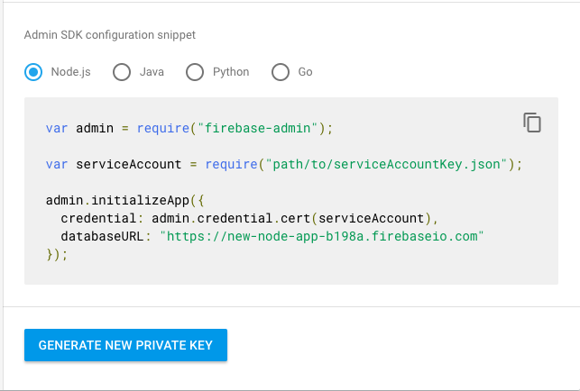

Now we need to get some info from the Firebase Console to make authentication work.
Return to console.firebase.google.com and open the project you created.
From there go to Project Overview > Settings

Last week we created users for our app. This week we will start connecting the users to our database.
In order to securely connect a user, we need to verify the user on the server side. To do that we need to set up the Firebase Admin and authentication tools.
Start by installing the Firebase Admin.
$ npm install --save firebase-adminAdd that to server.js with other packages.
const admin = require('firebase-admin');We need to then initialize the Firebase admin.
const firebaseAdmin = admin.initializeApp({
credential: admin.credential.cert(serviceAccount),
databaseURL: ''
});We'll get the databaseURL shortly.
Next we're going to create a
In Express, middleware is basically functions that are used in the middle of requests and resopnses. They have access to those values but do not render a resopnse.
Instead, they call next to return to the route.
Our Firebase Admin middleware is called isAuthenticated.
function isAuthenticated(request, response, next) {
}We use this to restrict access from non-authenticated users to the parts of our application that access the database.
Our app is going to allow users to make posts (like tweets). We will create a '/post' route that requires authentication.
app.get('/post', isAuthenticated, function(request, resopnse){
response.render('post.ejs');
});Notice that isAuthenticated is inserted into the route arguments.
Now we need to get some info from the Firebase Console to make authentication work.
Return to console.firebase.google.com and open the project you created.
From there go to Project Overview > Settings
From there click on "Service Accounts".

There you will see the databaseURL. Copy that into your project code.
Next click the Generate Key button.
This will download a json file with your authentication key inside it.
Do not share this information with anyone or commit it to a public repo! This is how you authenticate requests to your Firebase project and database.
Move that files to your project and copy the name of it into the line const serviceAccount = require(''); starting with ./
Now to set this up on the client side. On home.ejs we will add a link to the '/post' page. To authenticate the user we will pass a uid from Firebase to tell the server the user is logged in.
We need to use a <form> element to pass the uid.
<form method="GET" action="/post">
<input type="hidden" name="user" id="userInput">
<input type="submit" value="Write a new post">
</form>In JavaScript we can get the uid from the user user object:
if (user) {
console.log('user', user);
const userInput = document.getElementById("userInput");
userInput.value = user.uid;
} In the form the user value is hidden because the user doesn't need to see it or interact with it for it to work.
When the user clicks the button to add a new post it will pass the uid as a parameter into the isAuthenticated function:
function isAuthenticated(request, response, next) {
if (request.query.user) {
next();
} else {
response.redirect('/');
}
}If the user exists, we go to the post page. If not, redirect the user back to the home page. You could also send them to a login or create user page or return a message asking them to login.